Specify a linear model in terms of an outcome and predictors
Fit a linear model on a dataset
Describe the assumptions of a linear model
Create diagnotic plots for a linear model
Interpret diagnotic plots to decide whether the linear model assumptions are satisfied
Explain some strategies for selecting features to use as predictors
Interpret linear models and their estimates
Conduct and interpret hypothesis tests for linear model coefficients
ImportantRequired Packages
This chapter uses the following R packages:
dplyr
ggfortify
ggplot2
For a refresher about how to install and load packages, see the Packages section of DataLab’s R Basics workshop reader.
A common application of statistics is to study relationships between features. Chapter 5 introduced visualizations and the correlation statistic for this purpose. When the relationship between two or more features roughly follows a line, we can fit a linear model (or linear regression) that estimates the line’s intercept and slope. Linear models are suprisingly flexible: by transforming features, we can use linear models to summarize many kinds of lines and curves. This chapter introduces the fundamentals of linear models.
9.1 Fitting a Model
To demonstrate how to fit, inspect, and interpret a linear model, we’ll once again turn to the California market squid dataset (Section 7.1). As a reminder, the structure is:
Suppose we want to understand the relationship between the mass and dorsal mantle length of squid. We can start investigating by making a scatter plot of the two relevant features:
library("ggplot2")ggplot(squid) +aes(x = dorsal_mantle_length_mm, y = mass_g) +geom_point(alpha =0.5)
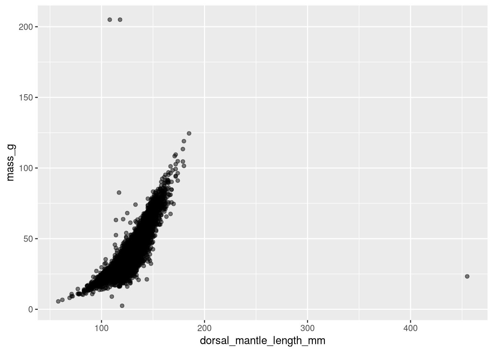
Figure 9.1
Most of the squid are in a dense cloud of points with dorsal mantle length less than 200 millimeters and mass less than 150 grams. Even though we removed some outliers earlier (Section 7.1), there are still three squid with unusual measurements. We’ll leave these in the dataset for now, but they do warrant further investigation.
The cloud of points is triangular or slightly curved, not a perfect straight line. We can get a better view of it by temporarily removing the outliers:
In Figure 9.2, the relationship looks like it might be quadratic or exponential. Nonetheless, we’ll start by modeling the relationship with a straight line and adjust later based on model diagnostics.
Setting the nature of the relationship aside, a single line or curve can’t pass through every point because of individual variation among the squid. The best we can hope for is that it captures the general trend or pattern in the points.
We can make the linear model concrete by writing the equation for the line. A line has an intercept, which we’ll denote by \(\beta_0\), and slope, which we’ll denote by \(\beta_1\). In order to account for individual variation, we’ll also include a residual term in the equation, which we’ll denote by \(\epsilon\). The residual is a reminder that this is just a model; when we plot the model or use it to make predictions, we’ll omit the residual. So the equation for the line is:
One way to interpret this equation is that the feature on the left-hand side is an outcome predicted by the features on the right-hand side, which we call predictors. In our model, mass is the outcome and flipper length is the only predictor.
Warning
Despite the outcome-predictor interpretation, a linear model alone can’t tell us whether a relationship between features is causal. To conclude that dorsal mantle length causes mass (or vice-versa), we’d have to make additional assumptions.
We use the names “outcome” and “predictor” for features in a linear model, but these concepts go by many names, which are often discipline-specific. Also keep in mind that features are called “variables” in most disciplines.
Other names for outcome include response, dependent feature, and endogenous feature.
Other names for predictor include covariate, independent feature, and exogenous feature.
Writing the linear model in terms of mathematical variables rather than feature names makes it more concise and more general (because the variables could refer to any features from any dataset). To do so, let \((x_i, y_i)\) denote observations (with two features) and \(\epsilon_i\) denote residuals, for \(i = 1,
2, \dots, n\). Then the equation becomes:
\[
y_i = \beta_0 + \beta_1 x_i + \epsilon_i
\]
This notation is standard in most disciplines.
NoteNote: Hat Notation
In statistics, another convention is to write a “hat” above variables that are estimators or estimates (including predictions). So we can write the model’s prediction for \(y_i\) as
\[
\hat{y}_i = \beta_0 + \beta_1 x_i
\]
We can also use this notation for parameter estimates. For instance, \(\hat{\mu}\) denotes an estimate for a distribution parameter \(\mu\).
9.1.1 Least Squares
Another way to think about the residuals in a linear model is as the errors in the model’s predictions. We can reorganize the equation for the line to emphasize this:
\[
\epsilon_i = y_i - (\beta_0 + \beta_1 x_i)
\]
Thinking about the residuals as errors is a hint that we might want to choose the coefficients \(\beta_0\) and \(\beta_1\) to minimize error. There are many different ways to do this, but the most widely-used approach, called ordinary least squares, is to minimize the residual sum of squares\(SS_\epsilon\), defined as
Squaring the residuals puts extra emphasis on errors that are very large (whether positive or negative). This is desirable if large errors are more costly than small errors. Squaring the residuals also leads to a variety of convenient mathematical properties, such as making it straightforward to find the minimum.
NoteNote: Maximum Likelihood Estimation
A different approach, called maximum likelihood estimation, treats the outcome as a random variable \(Y_i\) with an assumed distribution. We can use the distribution to choose estimates for the coefficients \(\beta_0\) and \(\beta_1\) which maximize the probability of the data.
Ordinary least squares is equivalent to maximum likelihood estimation where we assume that the \(Y_i\) are normally distributed with means \(\beta_0 + \beta_1
x_i\).
Maximum likelihood estimates have many useful statistical properties, including an analogue of the Central Limit Theorem (Section 7.6), which we can use to make confidence intervals and for hypothesis tests.
In R, we can use the lm function to fit a linear model by least squares. The function’s first argument must be a description of the features in the model; R calls this a (model) formula. The model formula is similar to the model equation, but replaces the equals sign with a tilde ~ and omits the coefficients and residual. The intercept is included implicitly, but you can make it explicit by writing it as a 1 (imagine the intercept as a coefficient for a column of ones).
The second argument must be the dataset: a data frame with columns corresponding to the features in the model.
So the code to fit the mass model for the California market squid is:
model =lm(mass_g ~ dorsal_mantle_length_mm, squid)model
The output shows the estimates for the coefficients. We’ll learn more about how to interpret models in Section 9.5. Before that, we need to review the assumptions of a linear model and examine whether they’re satisfied for this model.
9.2 Model Assumptions
A linear model involves many assumptions about the features being modeled and the dataset used to fit the model. Gelman et al. (2020) lists these assumptions (from most to least important):
Validity: the outcome should measure what you actually want to study, the model should include all relevant features, and the model should generalize well. For instance, a model for blood pressure should not be treated as a model for general health unless this can be justified by expert knowledge.
Representativeness: the dataset you use to train the model should be representative of the population to which you want the model to generalize. For example, a model for how long people can hold their breath should not be based on a sample of Olympic swimmers. On the other hand, a representative sample might include a few Olympic swimmers, because they’re people too!
Linearity: the relationship between the outcome and the predictors should be roughly linear. Often the relationship between the outcome and the features in the dataset isn’t linear, but it’s possible to transform the outcome or features to get a linear relationship (see Section 9.4).
Independence of errors: the residual for one observation should not depend on the residuals of others. This assumption means linear models are incompatible with most temporal and spatial datasets, although there are modifications we can make to accomodate these kinds of datasets.
Equal variance of errors: the residuals should all have the same standard deviation. When they don’t, then the model is worse at predicting for some inputs than others. One way to address this is by using weighted least squares to fit the model rather than ordinary least squares.
Normality of errors: the residuals should be have a normal distribution. This is assumption really only necessary for hypothesis testing (with CLT-based methods); it doesn’t matter for the coefficient estimates. This assumption is sometimes misinterpreted to mean that the outcome must have a normal distribution, which is not true.
Check these assumptions before and after fitting a linear model. The first two assumptions are really about the research question and data collection process, so failing to satisfy them usually can’t be fixed by changing the model. On the other hand, the last four assumptions relate to the model directly, and failing to satisfy them can sometimes be fixed by changing the model.
Section 9.3 describes how to check some of these assumptions with model diagnostics.
9.3 Model Diagnostics
Most of the information about how well a model fits is in the residuals, since the residuals measure what the model got wrong. We can make a variety of plots based on the residuals to check whether the assumptions from Section 9.2 are satisfied and whether there are any other problems.
For a linear model with only one feature, a good diagnostic starting point is to plot the feature against the residuals. This is called a residual plot. Patterns in the residual plot can reveal problems with linearity, independence of errors, and equal variance of errors. Let’s make this plot for the residuals from the mass model for the California market squid dataset.
In R, the predict function returns predictions from a model. Absent any additional arguments, it returns predictions for the dataset used to fit the model. So to get the predictions for the squid mass model:
squid$predicted_mass_g =predict(model)
We can use the predictions to calculate the residuals, in order to plot the residuals against the flipper length feature:
ggplot(squid) +aes(x = dorsal_mantle_length_mm, y = mass_g - predicted_mass_g) +geom_point()
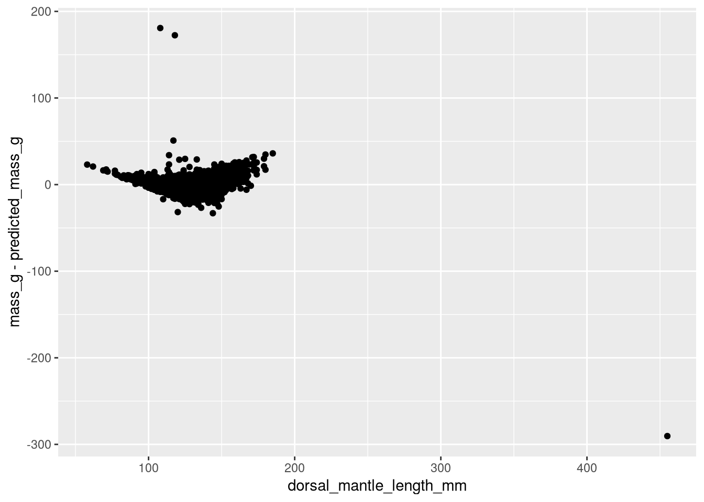
Figure 9.3: Dorsal mantle length versus residuals for the squid mass linear model.
Tip
The resid function returns the residuals from a model. It’s a convenient alternative to computing the residuals from the predictions.
For a dataset and model that satisfy the assumptions (Section 9.2), the residuals should be centered on 0 (mean 0) and should not exhibit any patterns. Four kinds of patterns are especially important signs of problems:
A trend in the residuals (that is, a line or curve that they follow): this usually means that the linearity assumption isn’t satisfied.
A “fan” or other shape in the range of the residuals: this usually means that the equal variance assumption isn’t satisfied.
Extreme residuals: like shapes, this usually means that the equal variance assumption isn’t satisfied.
Extreme predictor values: this means the representativeness assumption isn’t satisfied. Even if the residuals are small, predictions might not generalize well because the model doesn’t have many examples (observations) around the extreme value.
The residual plot will also exhibit patterns when the independence assumption isn’t satisfied, but many different patterns are possible depending on the nature of the dependence.
The residuals for the squid mass model in Figure 9.3 exhibit all four of the problem patterns. The residuals lie on a U-shaped curve which tapers at each end. There are three extreme residuals, one of which corresponds to an extreme predictor value; we should investigate these as potential outliers and possibly exclude them when fitting the model.
For models with multiple predictors, we can plot each one separately against the residuals. We can also plot the predictions against the residuals. These plots are all residual plots, and the interpretation is the same as for a model with a single feature, with the exception that we can’t check for extreme predictor values in the predictions versus residuals plot. Let’s plot the predictions against the residuals for the squid mass model:
ggplot(squid) +aes(x = predicted_mass_g, y = mass_g - predicted_mass_g) +geom_point()
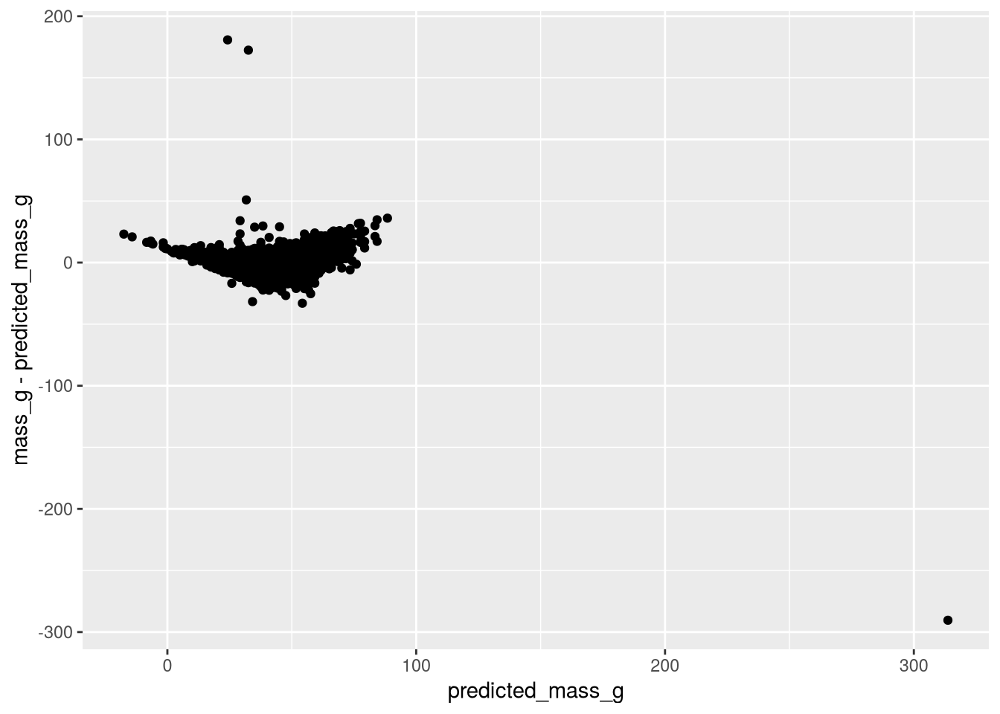
Figure 9.4: Predictions versus residuals for the squid mass linear model.
Notice that Figure 9.3 and Figure 9.4 only differ in the values on the x-axis. This is always the case for a model with a single feature. For models with multiple features, the residual plots for individual features will not necessarily be the same as the plot of predictions versus residuals.
Most statistical software, including R, provide three more diagnostic plots for linear models:
The normal quantile-quantile plot (normal QQ plot) displays the quantiles of a normal distribution against the quantiles of the residuals. QQ plots are helpful for checking how similar two distributions are, because similar distributions will have similar quantiles. For a linear model, we can use the normal QQ plot to check the normality assumption. The normal QQ plot is less important than other diagnostics, because the normality assumption is less important than the other assumptions.
The scale-location plot displays the predictions against the square root of the standardized residuals. This is a transformation of the residual plot, so the interpretation is the same (although the mean of the standardized residuals will not be 0); the transformation simply makes some patterns easier to notice.
The leverage plot displays a statistic called leverage against the residuals. Leverage is a measure of how far away each observation in the dataset is from the others. Observations with high leverage may be outliers and may have undue influence over the linear model (similar to how extreme values affect the sample mean).
In R, we can use the ggfortify package’s autoplot function to make all four diagnostic plots for a model:
library("ggfortify")autoplot(model)
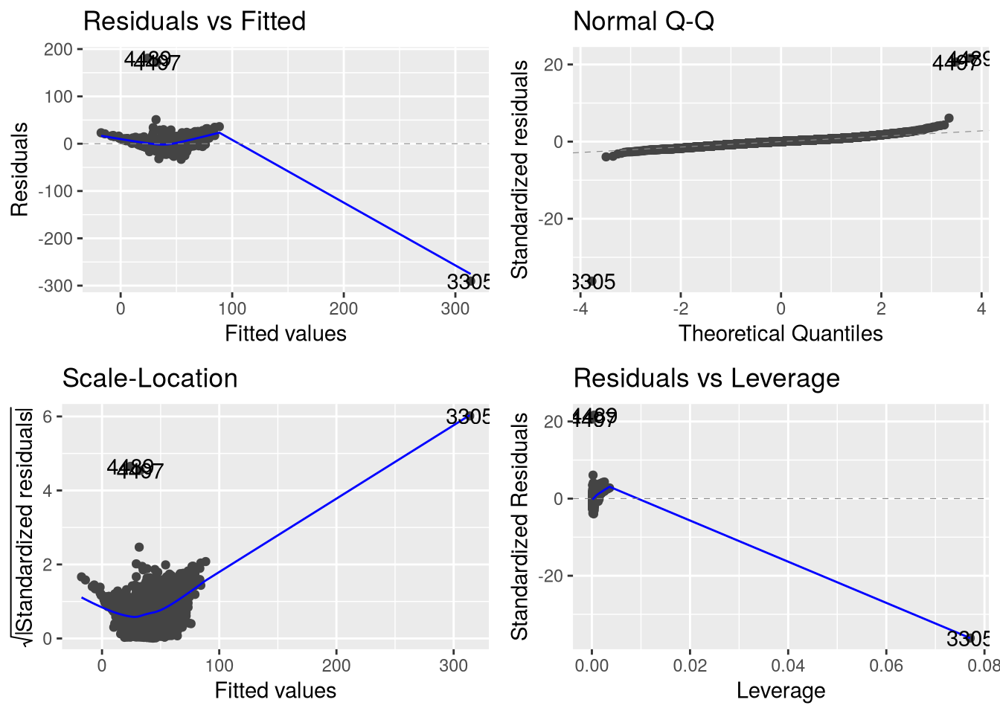
Figure 9.5: Diagnostic plots for the squid mass linear model. Clockwise from the top left, they are the residual plot, normal QQ plot, leverage plot, and scale-location plot.
The residual plot in Figure 9.5 is the same as Figure 9.4; the scale-location plot exhibits similar problems. The normal QQ plot shows that the residuals are probably not normally distributed, with extreme values in both tails. The leverage plot shows that the observation with extreme dorsal mantle length has a lot of leverage; since it also has a large residual, this means it’s exerting a lot of influence on the model without much benefit.
Let’s refit the model without the extreme observations we noted in Figure 9.5 (and also in Figure 9.1). We can use the squid_cloud subset from earlier for this:
model =lm(mass_g ~ dorsal_mantle_length_mm, squid_cloud)autoplot(model)
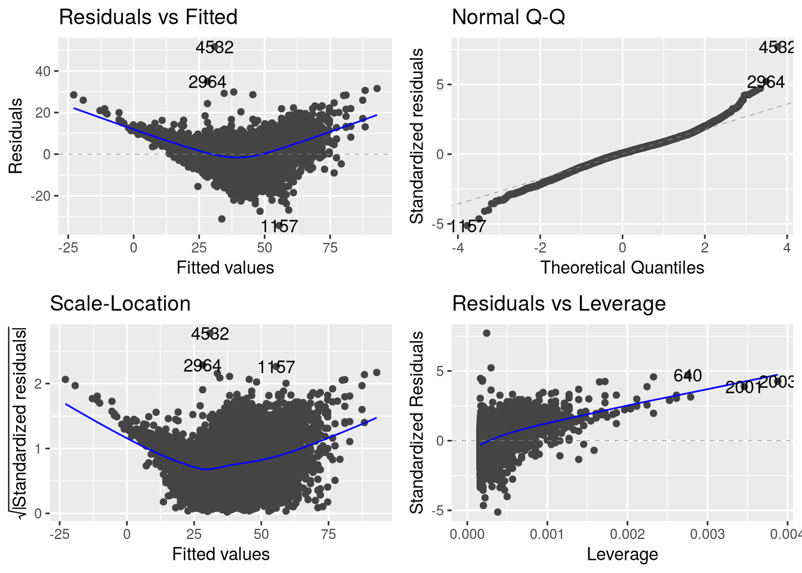
Figure 9.6: Diagnostic plots for the squid mass linear model, after removing extreme observations.
The new diagnostic plots in Figure 9.6 show that removing the extreme observations improved two problems: the most extreme residuals are closer to the others, and the high-leverage residuals are smaller. Nevertheless, there’s still a distinct curve and a taper to the residuals in the residual plot that suggest non-linearity and unequal variance, respectively; we’ll address these problems in Section 9.4 by adding additional terms to the model.
NoteNote: R’s Built-in Diagnostic Plots
Instead of using the ggfortify package, to make diagnostic plots for a model with ggplot2, it’s also possible to make diagnostic plots with R’s built-in plot function:
plot(model)
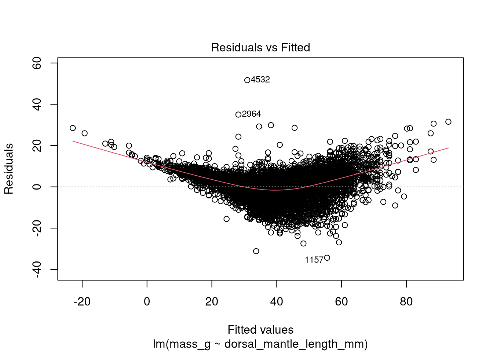
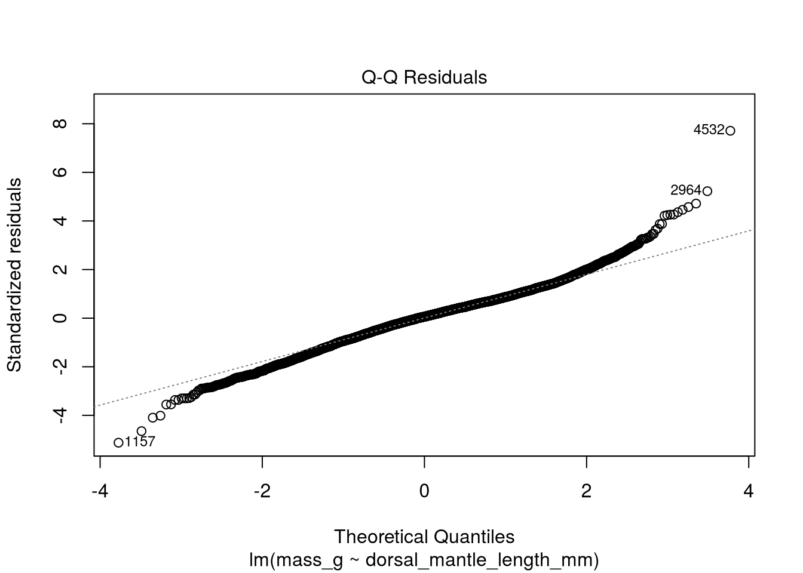
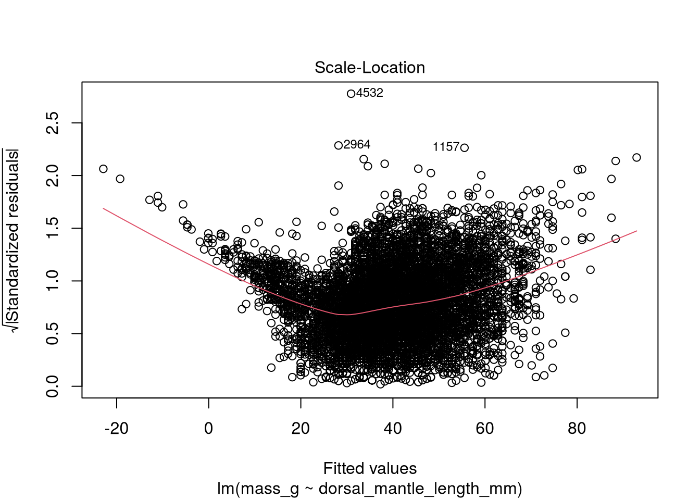
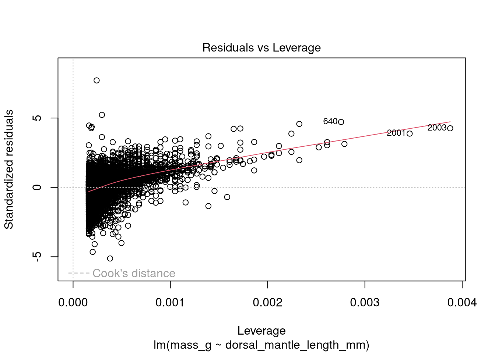
NoteSee Also
For examples of patterns to look for in residual plots, see:
A dataset might have dozens or hundreds of features, but including every feature in a linear model is usually not a good idea. One problem is that each additional predictor in the model means an additional coefficient to estimate. When the number of observations is low relative to the number of predictors, there usually isn’t enough information to compute accurate coefficient estimates. A large number of predictors can also lead to problems with overfitting, where the model fits the sample extremely well but fits the population poorly.
Another problem, multicollinearity, is that when two predictors are highly correlated (Section 5.2), they effectively contain redundant information. As we add more predictors to the model, it becomes more likely that two (or more) will be correlated. Multicollinearity makes it difficult (or impossible) to compute accurate coefficient estimates for the affected predictors.
Tip
If two predictors are highly correlated, consider removing one of them from the model.
The point is that we should be cautious about which predictors we add to a model. The best approach is to base the model on expert knowledge or a hypothesis about the relationship between the outcome and other features in the dataset. In exploratory work, we can instead or additionally use the model diagonistics (Section 9.3) to decide whether it might be missing important predictors (and whether adding a predictor improves the fit).
The diagnostic plots (Figure 9.6) for the squid mass model exhibit a U-shaped curve in the residuals, and the scatter plot of dorsal mantle length versus mass (Figure 9.2) also exhibits a curve. The curve in both looks like it could be quadratic; this suggests we’re missing a squared predictor. For most physical objects, mass is proportional to volume, which is roughly length cubed; considering this, it makes sense to include squared or even cubed dorsal mantle length in the mass model.
Let’s try adding squared dorsal mantle length to the mass model. We’ll also keep the original dorsal mantle length predictor; when including a power of a feature in a model, it’s often a good idea to include lower powers as well.
We can square the dorsal_mantle_length_mm feature in the model formula by writing it inside of the I function (which makes R treat arithmetic in a formula as arithmetic):
To see how this changes things, we’ll recreate the diagnostic plots:
autoplot(quad_model)
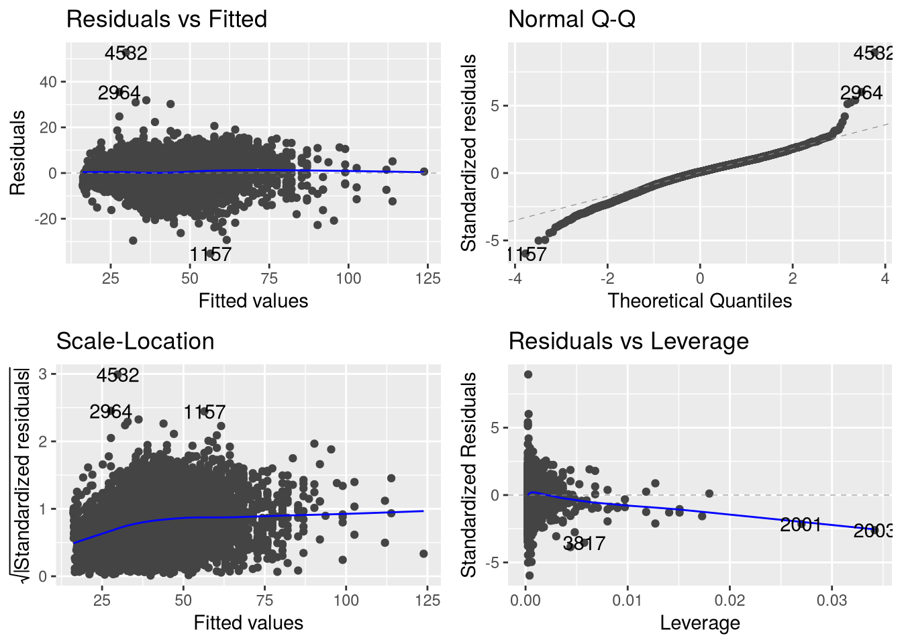
Figure 9.7: Diagnostic plots for the squid mass linear model, with a squared dorsal mantle length term.
The diagnostics in Figure 9.7 are much improved. In the residual plot, there’s no longer any signs of a curve. There still is in the scale-location plot, but it’s minor. The residuals still taper at the tails of the prediction range, but much less than they did in Figure 9.6. The leverage plot also shows improvement, with high-leverage residuals nearly halved. The QQ plot is about the same. On the whole, the diagnostics are now good enough to keep the model, with some caution when interpreting hypothesis tests that assume normally distributed residuals.
NoteNote: Adding a Cubic Term
Based on our reasoning earlier, we might want to try adding cubed dorsal mantle length to the model too:
Figure 9.8: Diagnostic plots for the squid mass linear model, with a cubed dorsal mantle length term.
Overall, Figure 9.8 is similar to Figure 9.7. There’s a little improvement in the high-leverage residuals, but any other improvements are subtle. At this point, we can leave the cubic term out to make the model simpler, or include it, because it matches our intuition about the relationship between mass and volume. We can also check other diagnostics, such as adjusted R-squared (more about this in Section 9.5) or an estimate of the model’s accuracy on new data points (for example, by cross-validating the model).
9.4.1 Categorical Predictors
Up to this point, we’ve only considered linear models with numerical predictors. Linear models can also have categorical predictors. For a categorical predictor, we add a constant offset to the prediction for each category. We still call the offsets coefficients, because each category can be represented by a feature that’s 1 for observations in the category and 0 otherwise.
NoteNote: Indicators
The 0 and 1 representation for a category is called an indicator or one-hot encoding.
In R and most other statistical software, the first category is treated as a baseline or reference category with coefficient 0, so a categorical predictor with \(k\) categories only requires \(k - 1\) coefficient estimates.
Let’s try fitting a model with a categorical predictor to the California market squid dataset. Suppose we want to examine whether the age of a squid affects it size. We’ll use mass as a substitute for size use maturity as substitute for age. Then the linear model is:
There are three maturity categories: immature, mature, and spent. The model treats immature as the baseline category, so the model output only lists coefficients for the mature and spent categories. Think of these coefficients as the additional mass for the given category compared to the reference category.
As usual, it’s a good idea to check the model diagnostics:
autoplot(maturity_model)
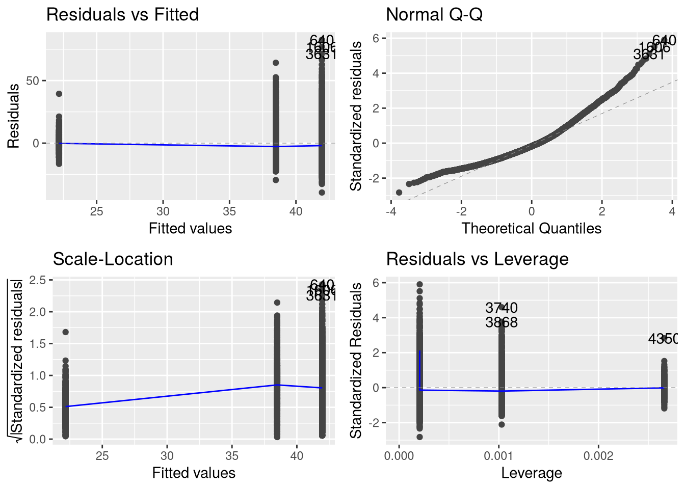
Figure 9.9: Diagnostic plots for the squid mass linear model based on maturity alone.
In Figure 9.9, notice that the there are only three different predicted values; this reflects that there are only three maturity categories, and maturity is the only predictor in the model. The residual plot and scale-location plot don’t show any trends. On the other hand, the residuals spread out more for more mature squid, which means there’s unequal variance. The QQ plot shows that the residuals are probably not normally distributed. The leverage plot looks okay. The takeaway for this model is that the coefficient and standard error estimates are likely accurate, but because there’s evidence that the residuals do not have equal variance and are not normally distributed, we should be cautious about using standard hypothesis tests for the model. There are several test statistics designed for groups with unequal variance; we should use one of these if we want to conduct a test.
9.4.2 Interactions
Sometimes an outcome depends on how two or more predictors interact. That is, the relationship between the outcome and one of the predictors changes when the other predictor changes. We can model a multipicative interaction in a linear model by including a term for the product of two or more features (whether they are numerical or categorical). Generally, if we include an interaction term for two features, we should also include terms for each feature separately.
9.4.3 Transformations
Mathematically transforming the outcome or predictors in a linear model is often helpful when the assumptions of linearity, equal variance of errors, and normality of errors aren’t satisfied. We saw an example of this at the beginning of this section, where adding a quadratic term to the squid mass model corrected problems with non-linearity and unequal variance.
Choosing appropriate transformations can be difficult in practice, because we rarely know the true nature of the relationship. Fortunately, relationships that a model fails to account for typically show up as patterns in its residuals (Section 9.3). We can use the residuals to decide if and how features should be transformed.
Tip
Many kinds of non-linear relationships can be made linear with transformations.
For example, suppose that the true relationship between two features \(x_i\) and \(y_i\) is exponential:
\[
y_i = \textrm{e}^{\beta_0 + \beta_1 x_i}
\]
We can make the relationship linear by taking logarithms:
\[
\ln{y_i} = \beta_0 + \beta_1 x_i
\]
In this case, we should fit a linear model with \(\ln{y_i}\) as the outcome and \(x_i\) as a predictor.
Once we’ve fitted a model and checked that the diagnostics look okay, we can move on to interpreting the coefficients and other model statistics. This section describes a few different tools for interpretation.
9.5.1 Model Summary
We can use R’s summary function to get a detailed description of a model:
summary(quad_model)
Call:
lm(formula = mass_g ~ dorsal_mantle_length_mm + I(dorsal_mantle_length_mm^2),
data = squid_cloud)
Residuals:
Min 1Q Median 3Q Max
-35.237 -3.267 0.521 3.775 52.794
Coefficients:
Estimate Std. Error t value Pr(>|t|)
(Intercept) 77.386910 3.670391 21.08 <2e-16 ***
dorsal_mantle_length_mm -1.538497 0.057980 -26.54 <2e-16 ***
I(dorsal_mantle_length_mm^2) 0.009674 0.000228 42.44 <2e-16 ***
---
Signif. codes: 0 '***' 0.001 '**' 0.01 '*' 0.05 '.' 0.1 ' ' 1
Residual standard error: 5.9 on 6191 degrees of freedom
Multiple R-squared: 0.8404, Adjusted R-squared: 0.8403
F-statistic: 1.63e+04 on 2 and 6191 DF, p-value: < 2.2e-16
Let’s go through the model summary a few lines at a time. It begins with the R code we used to fit the model:
Residuals:
Min 1Q Median 3Q Max
-35.237 -3.267 0.521 3.775 52.794
The distribution of the residuals is an important source of diagnostic information. We recommend visualizing the residuals, as in Section 9.3, but their quartiles are occasionally useful for quickly inspecting a model.
After the residual quartiles, the summary lists the coefficients in a table:
Each row of the table corresponds to one term in the model. The first is typically the intercept \(\beta_0\). The remaining rows correspond to features. The columns contain an estimate of the coefficient, an estimate of its standard error, and two columns related to hypothesis testing. We’ll examine these last two columns in Section 9.6.
Residual Standard Deviation
Finally, the summary lists several statistics about the model as a whole, beginning with:
Residual standard error: 5.9 on 6191 degrees of freedom
Residual standard error is the sample standard deviation of the residuals (with a statistical correction for the number of terms being estimated in the model). Recall that standard deviation is approximately the mean distance to the mean. In a linear model with an intercept, the residuals always have mean 0 (\(\bar{\epsilon} = 0\)), so the residual standard error is approximately the mean distance between the actual outcomes and the fitted line.
NoteDefinition: Residual Standard Deviation
The sample variance of the residuals for a linear model with \(k\) terms (including the intercept) is defined as
Think of this as the variance in the sample that’s not explained by the model.
The sample standard deviation of the residuals \(s_\epsilon\) is the square root of \(s_\epsilon^2\).
NoteNote: The Name “Residual Standard Error”
The name “residual standard error” is an R invention. Standard error refers to the standard deviation of an estimator across many samples, but there’s no estimator and no resampling at work here. The R documentation even notes that this name is inappropriate (in ?sigma).
Appropriate names include “standard deviation of the residuals” and “residual standard deviation” among others.
The R-squared statistics, conventionally denoted by \(R^2\) and \(R_\textrm{adj}^2\), are ratios of variance in the outcome that’s explained by the model to total variance.
R-squared \(R^2\) is always between 0 and 1. Values closer to 1 indicate that the model explains more of the variance in the outcome. R-squared is non-decreasing as more terms are included in the model, because more terms means more flexibility to fit the observations. This is a limitation: we can’t use R-squared to decide how many terms to include in the model, because it will always suggest more terms are better.
Adjusted R-squared \(R_\textrm{adj}^2\) decreases when terms with weak explanatory power are added to the model, so it tends to be more useful than ordinary R-squared \(R^2\). Its value can sometimes be smaller than 0.
NoteDefinition: R-Squared Statistics
The R-squared statistics are based on the idea that the variance of the outcome \(y_i\) can be partitioned into two meaningful parts: variance explained by the model and unexplained variance from other, often unknown, processes.
Mathematically, variance is a sum of squares. The total sum of squares for the outcome \(y_i\) is defined as
Notice that the total sum of squares is part of and proportional to the sample variance \(s^2\) (Section 3.4.2).
We can partition the total sum of squares into two parts, the explained sum of squares\(\textrm{SS}_\textrm{model}\) and the residual sum of squares \(\textrm{SS}_\epsilon\):
The denominator \(n - k - 1\) accounts for the number of terms in the model.
R-squared, whether adjusted or not, mostly tells us about how well the model fits the sample. A model that fits a sample well might not fit the population well, and a model that fits the population well might not fit a sample well. Moreover, for some populations, observations are always noisy (accurate measurement is difficult). Then R-squared can be large even if the model fits the population well.
Warning
Treat R-squared as one statistic among many when examining a model.
To estimate how well a model will generalize, use other methods specifically designed for that purpose, such as cross-validation.
F Statistic
F-statistic: 1.63e+04 on 2 and 6191 DF, p-value: < 2.2e-16
The F statistic is the ratio of variance in the outcome that’s explained by the model to unexplained variance. The F statistic is always positive.
The F statistic is also the relative difference between the residual sum of squares (unexplained variance) for a simplified model with only an intercept (the same as predicting the outcome with the sample mean) and for the fitted model. This perspective is helpful for interpreting the statistic: larger values indicate that the fitted model is better at explaining the variance of the outcome than the simplified model.
NoteDefinition: F Statistic
For a model with \(k\) terms (excluding the intercept), the F statistic is defined as
\[
F
= \frac{\textrm{SS}_\textrm{model}} {\textrm{SS}_\epsilon}
\cdot \frac{n - k - 1} {k}
= \frac{\textrm{SS} - \textrm{SS}_\epsilon}{\textrm{SS}_\epsilon}
\cdot \frac{n - k - 1}{k}
\]
The F statistic is primarily used for a hypothesis test where the null hypothesis is that the model coefficients (excluding the intercept) are all 0. As Gelman et al. (2020) point out, this null hypothesis is unrealistic—if we believe it’s plausible that a predictor is entirely unrelated to the outcome, we shouldn’t include it in the model in the first place. The F test is often used to decide whether a model with fewer features might be more appropriate, but there are better approaches, such as examining standard errors for the coefficient estimates to decide whether the estimates are too imprecise to be useful.
Warning
As with R-squared, treat the F statistic as one statistic among many when examining a model.
Important
Treat every model as a simplification of reality. Statistics can help us understand how well a model describes data, but can’t tell us whether a model is “correct” (and it’s unclear what it means for a simplification to be “correct” anyway).
9.5.2 Predictions and Marginal Means
When a model only has one or two predictors, and they’re not transformed, we often interpret the model by examining the coefficients directly. Interpretation is more difficult for models with a many predictors, especially if some are transformed or have interactions. We might also want to ask questions about the model that aren’t easy to answer based on the coefficients alone, such as how the outcome varies across different subpopulations of interest.
One solution to these problems is to examine marginal means, means of (or “marginalized over”) the predictions on a grid of predictor values. The choice of grid depends on the question we want to answer. In some disciplines, marginal means are also called marginal effects.
For example, suppose we want to investigate whether a new treatment lowers blood pressure. We conduct a study where half of the subjects receive the treatment and half don’t. In addition to blood pressure, we also collect other information about the people in the study, such as their age and medical history. Although we can compare the blood pressure of those who received the treatment to those who didn’t directly, what we really want is to compare counterfactuals: what would the blood pressure of people who received the treatment be if they hadn’t received it, and what would the blood pressure of people who didn’t receive the treatment be if they had? We can use marginal means to address these questions as well as many others.
In R, the marginaleffects package and the emmeans package each provide a variety of functions to compute marginal means. The also have many other features, such as functions to create grids, carry out hypothesis tests, and compute other aggregates of model predictions.
NoteSee Also
To learn more about how to interpret models with marginal means, we recommend Model to Meaning(Arel-Bundock 2025). The book is oriented around case studies and serves as an introduction to the R package marginaleffects.
9.6 Testing Models
Linear models are often useful in data analyses where we want to test some hypothesis (Chapter 8). Three different approaches (among many) that we can take to test coefficients are:
Permutation tests: we can test whether the outcome and all predictors are correlated (that is, null hypothesis \(\beta_1 = \dots = \beta_k = 0\) for a model with \(k\) predictors). However, we can’t test individual coefficients with a permutation test, and we can’t test for non-zero coefficient values.
Bootstrap confidence intervals: we can resample the residuals with replacement, adding them back to the model predictions, to generate bootstrap estimates and confidence intervals for the coefficients and other statistics. By inverting the confidence intervals, we can test individual coefficients and other statistics.
Classical tests: by assuming that the errors are independent, normally distributed, and have equal variance, we can use classical tests (typically based on Student’s t distribution) for the individual coefficients and other statistics. Specifically, in the single predictor case, we assume for \(i = 1,
\dots, n\) that
In practice, these tests tend to have nearly-correct error rates as long as the sample size is large (\(n \geq 30\)) and the distribution of errors is symmetrical, even if it isn’t normal.
For all of these, the linear model assumptions of validity, representativeness, linearity, independence of errors, and equal variance of errors are critical. In general, failing to satisfy these assumptions increases testing error rates, which makes the discernibility level (and power estimates) inaccurate.
R’s built-in functions focus exclusively on classical tests, and the classical tests work well in most cases, so that’s what we’ll cover here. The summary function displays the standard score for each coefficient. Under the linear model assumptions, for a model trained on \(n\) observations and \(k\) predictors, each standard score comes from a t distribution with normality \(n - k - 1\).
The summary function also displays a p-value for each coefficent for a test with null hypothesis \(H_0: \beta_i = 0\) and alternative hypothesis \(H_A:
\beta_i \neq 0\). This p-value is computed from the t distribution.
As an example, let’s look at the summary for the squid mass model with the squared dorsal mantle length term:
summary(quad_model)
Call:
lm(formula = mass_g ~ dorsal_mantle_length_mm + I(dorsal_mantle_length_mm^2),
data = squid_cloud)
Residuals:
Min 1Q Median 3Q Max
-35.237 -3.267 0.521 3.775 52.794
Coefficients:
Estimate Std. Error t value Pr(>|t|)
(Intercept) 77.386910 3.670391 21.08 <2e-16 ***
dorsal_mantle_length_mm -1.538497 0.057980 -26.54 <2e-16 ***
I(dorsal_mantle_length_mm^2) 0.009674 0.000228 42.44 <2e-16 ***
---
Signif. codes: 0 '***' 0.001 '**' 0.01 '*' 0.05 '.' 0.1 ' ' 1
Residual standard error: 5.9 on 6191 degrees of freedom
Multiple R-squared: 0.8404, Adjusted R-squared: 0.8403
F-statistic: 1.63e+04 on 2 and 6191 DF, p-value: < 2.2e-16
In this case, at level \(\alpha = 0.05\), the coefficients for both dorsal mantle length and squared dorsal mantle length are statistically discernable. There’s strong evidence in the data that they should not be 0. For this model, the QQ plot (Figure 9.7) indicated that the residuals are not normally distributed, and that they’re skewed rather than symmetrical, so the error rate of the test might be higher than chosen level 5%. Nevertheless, because this is a very large dataset and the relationship matches our intuition about the physical world, we have no reason to doubt that the coefficients should not be 0.
The built-in R function confint returns classical (t distribution) confidence intervals for the coefficients in a linear model:
These provide more insight into the range of likely values for each coefficient than the p-values alone.
The marginaleffects package and emmeans package provide functions to test more sophisticated hypotheses. They support a variety of testing methods, including the bootstrap and classical tests.
NoteSee Also
This chapter is based on many sources (see References), but two textbooks were especially influential:
Regression and Other Stories(Gelman et al. 2020) provides a thorough introduction to linear models (as well as other kinds of models) while keeping the focus solidly on realistic applications. It includes details about several intermediate to advanced topics that aren’t covered here, such as Bayesian statistics.
DataLab also has two older workshops about linear models:
Arel-Bundock, Vincent. 2025. Model to Meaning: How to Interpret Statistical Models with R and Python. CRC Press LLC. https://marginaleffects.com/.
Carroll, Stephanie Russo, Ibrahim Garba, Oscar L. Figueroa-Rodríguez, et al. 2020. “The CARE Principles for Indigenous Data Governance.”Data Science Journal 19 (1). https://doi.org/10.5334/dsj-2020-043.
Hesterberg, Tim. 2014. What Teachers Should Know about the Bootstrap: Resampling in the Undergraduate Statistics Curriculum. arXiv:1411.5279. arXiv. https://doi.org/10.48550/arXiv.1411.5279.
Kuhn, Max, and Kjell Johnson. 2020. Feature Engineering and Selection: A Practical Approach for Predictive Models. CRC Press, Taylor & Francis Group. https://feat.engineering/.
Matejka, Justin, and George Fitzmaurice. 2017. “Same Stats, Different Graphs: Generating Datasets with Varied Appearance and Identical Statistics Through Simulated Annealing.”Proceedings of the 2017 CHI Conference on Human Factors in Computing Systems (New York, NY, USA), CHI ’17, May 2, 1290–94. https://doi.org/10.1145/3025453.3025912.
The Turing Way Community. 2025. The Turing Way: A Handbook for Reproducible, Ethical and Collaborative Research. V. 1.2.3. Zenodo, released April. https://doi.org/10.5281/zenodo.15213042.